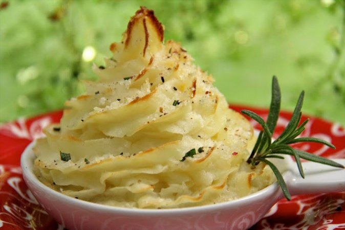

Roasted Garlic Parsnip Mashed Potatoes Recipe
Home

Description
Enjoy a delicious twist on classic mashed potatoes with this recipe for Parmesan Parsnip Potato Puffs. These puffs combine the creamy texture of russet potatoes with the sweet, earthy flavor of parsnips, enhanced with a touch of garlic. Enriched with butter and milk for smoothness and seasoned with sea salt, these puffs are then piped into elegant swirls, topped with crunchy panko breadcrumbs, and drizzled with melted butter. Perfect as a sophisticated side dish, they can be served fresh or frozen for later use. Bake until golden for a delightful finish that pairs wonderfully with any main course.
Prep Time 3 hours
Cook Time 3 hours
Total Time 6 hours
Ingredients
- 4 pounds russet potatoes peeled and cut into 2 inch pieces
- 4 medium parsnips about 12 ounces, peeled and cut into approximately 2 inch pieces
- 3 medium garlic cloves
- ½ cup milk
- ¼ cup butter
- 2 teaspoons sea salt
- ½ cup panko panko are Japanese bread crumbs.They are available at many grocery stores. I found them at Super Walmart in the Asian section.
- ¼ cup melted butter
- freshly ground black pepper
Steps
- Place potatoes, parsnips and garlic cloves into a medium size sauce pan and cover with water. Bring to a boil, then reduce heat to a simmer and cook for 25 minutes or until potatoes are very tender when pierced with a fork.
- Mash potato mixture with a potato masher. Heat butter and milk in the microwave for one minute. Stir milk mixture into potato/parsnips, add salt and mash again until smooth and creamy.
- Either spoon or pipe potato mixture on to small individual size serving dishes or parchment-lined baking sheets leaving 2 inches between mounds.
- To pipe, place a large star tip on a pastry bag and fill bag with potato mixture. Pipe circular swirls into small serving dishes on parchment-lined baking sheet. If you don't have a pastry bag, snip one bottom corner off of a plastic zippered freezer bag. Place large star tip into snipped out opening in bag. Carefully spoon the potato mixture into bag. Squeeze the air out of bag and twist the top closed. To pipe, hold the filled bag perpendicular to the serving dish or baking sheet, then force the potato mixture through the top by squeezing the end of the bag with your writing hand and supporting the bag with your other hand. Pipe circular swirls.
- Sprinkle mounds or swirls with panko and drizzle with melted butter. I used about 1 teaspoon per swirl. Sprinkle liberally with freshly ground pepper.
- At this point the potatoes can be baked at 350˚ for 25-30 minutes until heated through and tips are slightly browned. They can also be frozen on a baking sheet, then wrapped in plastic wrap and placed in a zip lock bag. To bake frozen potatoes, remove while still frozen from bag and place on a baking sheet. Allow to un-thaw for 1 hour then bake as directed above.